থামিয়ে নয়, সামলে।
One live picture of Kolkata's roads, rain and crowds for the traffic police, KMC, disaster response and ambulance (108) crews. On-premises open-source AI proposes; a named officer decides.
Labels used throughout: LIVE (a real open feed), OBSERVED (a measured record), MODELLED (computed under stated assumptions), SIMULATED (an exercise scenario), EMULATED (a stand-in for a feed that needs an agency's access).
| What | Fact | Source |
|---|---|---|
| Cloudburst at high tide | 251.6 mm in 24 h on 22–23 Sep 2025, the heaviest in about four decades; roads went under within the hour; 8–12 deaths, most by electrocution; metro, rail and ~30 flights disrupted | IMD; Reuters/PTI via Dawn, Business Standard |
| Drainage and the river | Outfall gates close at high tide on the Hooghly — the same rain waterlogs far faster | KMC/ADB FFEWS project; port statements |
| Flood warning infrastructure | KMC is building India's first city-level Flood Forecasting & Early Warning System (ADB) — sensors in canals, pumping stations and junctions | ADB "Toward Resilient Kolkata"; Millennium Post |
| Durga Puja | 10,000+ police a day, ~30% on traffic; goods-vehicle restrictions; pandal-route apps | Kolkata Police via Millennium Post (2025) |
| Bridges | Howrah Bridge: ~1 lakh vehicles and ~1.5 lakh pedestrians a day | Wikipedia; Deccan Herald (approximate) |
| Coordination | Traffic police, KMC, WBSDMA, the power utility and ambulance (108) each hold one piece; coordination by phone and radio | observed practice |
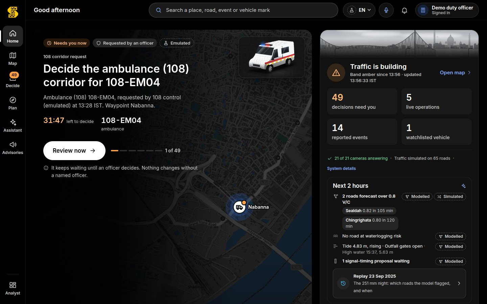
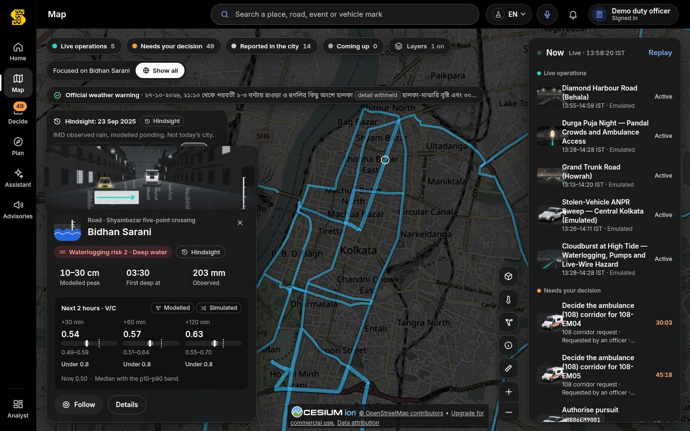
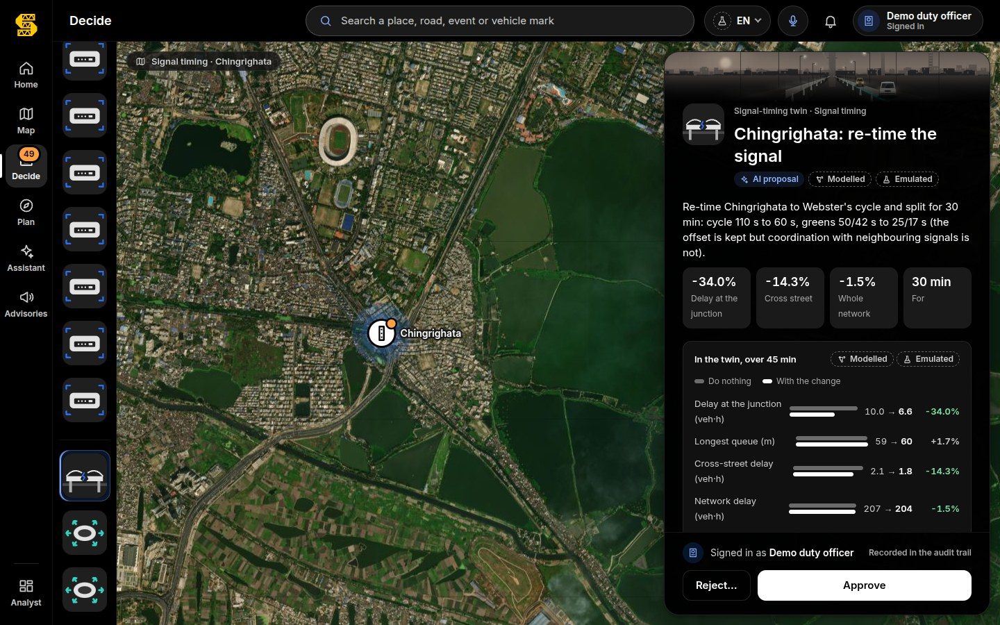
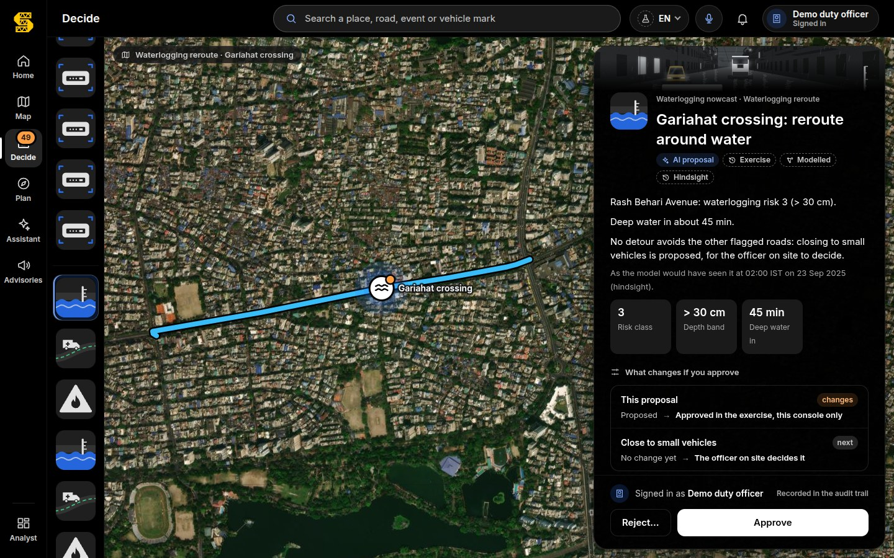
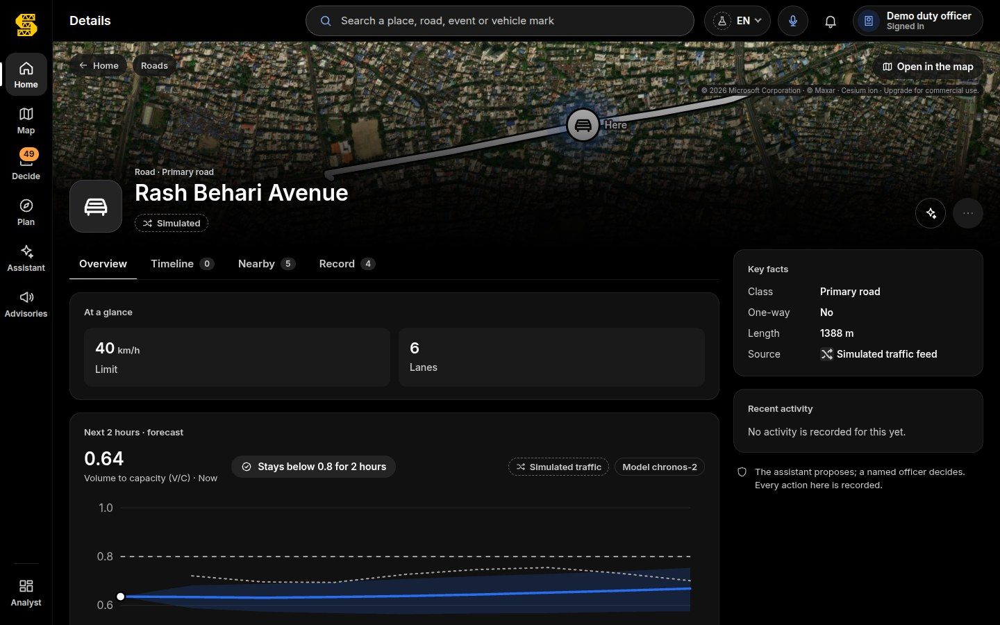
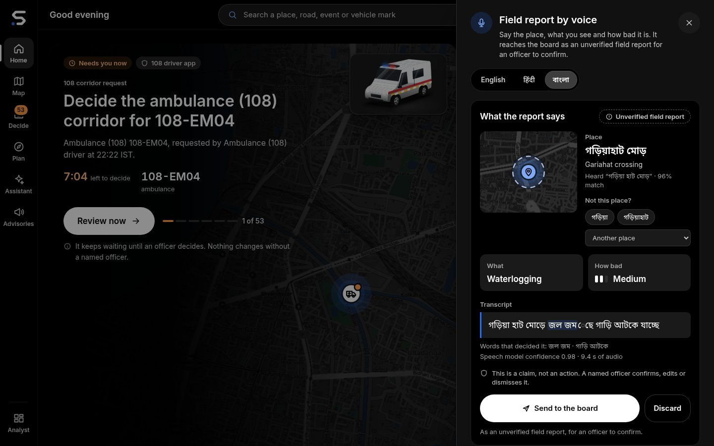
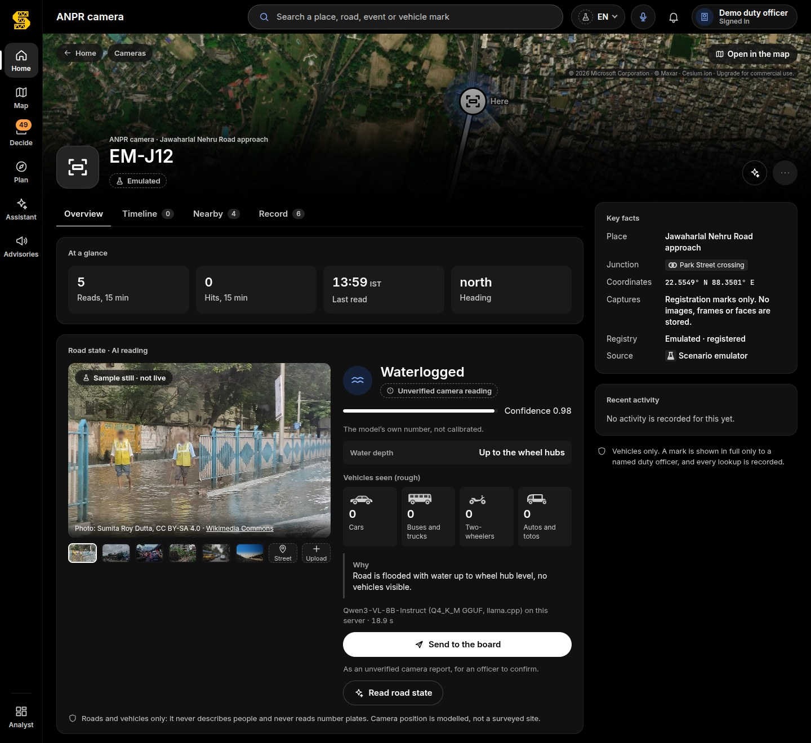
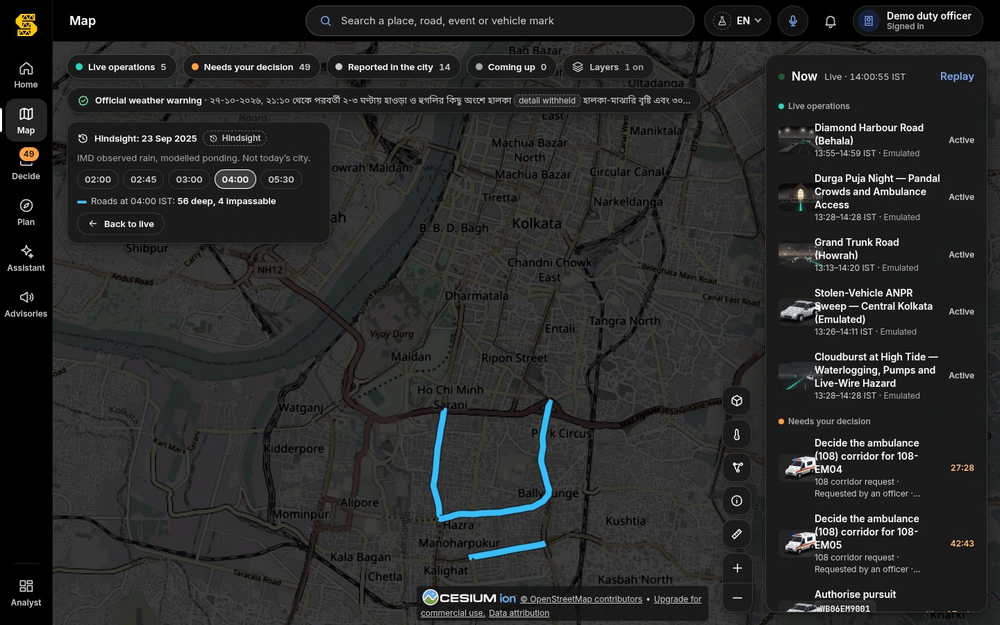
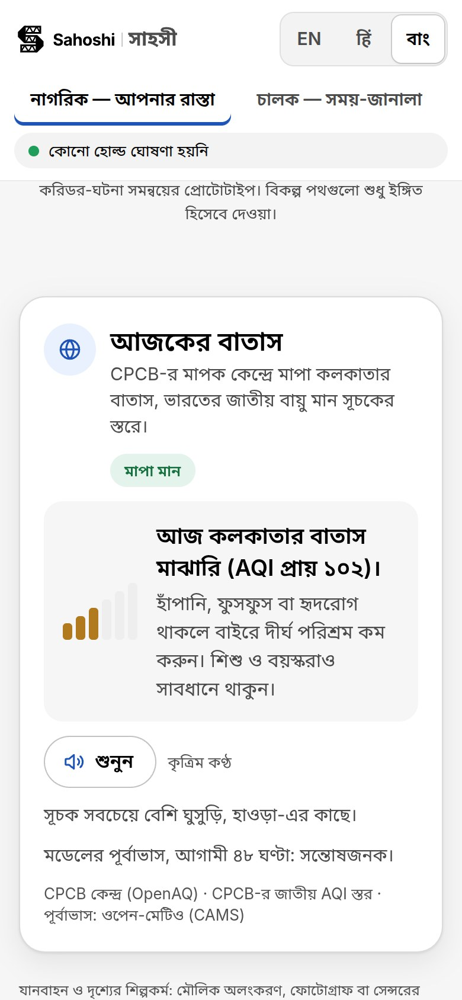
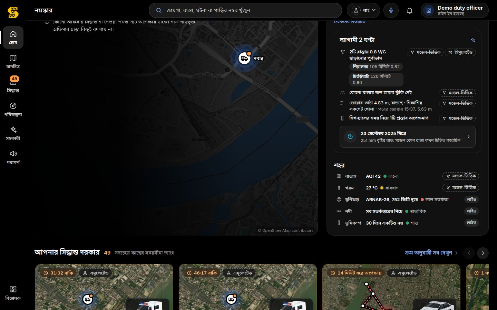
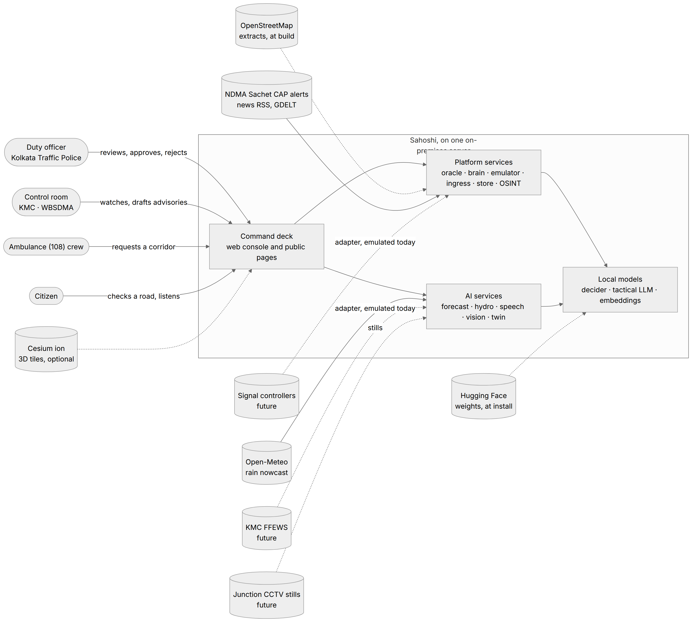
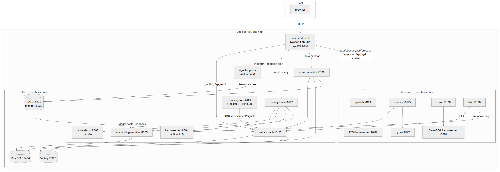
| Capability | Model (licence) | Result | Label |
|---|---|---|---|
| Corridor forecasting | Chronos-2 (Apache-2.0) | MAE 0.043 V/C vs 0.095 for the seasonal baseline (−55%); p10–p90 coverage 0.80 | SIMULATED history until Kolkata traffic is recorded |
| Waterlogging nowcast | rain × tide × DEM × pumps | Replay of 22–23 Sep 2025 on IMD-observed rain: 13 of 13 reported on-network places flagged; first flag 02:45 IST | OBSERVED rain, MODELLED ponding |
| Signal-timing twin | cell-transmission model + Webster / max-pressure | Bottleneck discharge exact; shockwave speed within 0.2% of theory; 30 min of the city in 0.12 s | MODELLED |
| Bengali voice | Bengali Whisper-medium (Apache-2.0), AI4Bharat Indic Parler-TTS | Speech-to-text WER 11.2%, CER 2.5%, place 55/60, kind 60/60 (IndicConformer measured, not better); voice round trip WER 8.2%, places 60/60 (Svara 11.2%, 55/60) | synthetic round trip |
| Road state from a still | Qwen3-VL-8B (Apache-2.0) | 11 of 12 correct; 9 of 9 person/plate probes refused; live on this computer in 2.4 s (Qwen3.5-9B measured: 10 of 12) | Commons photos, credited |
| Decision support | pplx-decider-v1.2 (Perplexity, Apache-2.0, 27B) | 22 of 26 labelled Kolkata decisions; answers in 1.0 s at p95 (was 2.1 s with v1-27b) | proposals only; an officer decides |
| Memory and retrieval | pplx-embed-context-v1-4b + pplx-embed-v2-late-0.6b (MIT) | Bengali SOP recall@1 0.93 vs 0.71 for bge-m3; cross-script news dedup AUC 0.997 vs 0.56 (word overlap) | synthetic Kolkata eval set |
| Privacy (OSINT) | PII-Tracer (MIT) + rules | person recall 0.84 → 0.94; 0 of 122 place names redacted | synthetic eval set |
Every model runs on the one on-premises computer; numbers come from the services' own evaluation files in the repository (docs/ai/*.md).
| Measure | Value | Basis |
|---|---|---|
| Junction-freeze delay | 100× less (range 25×–506×) | rolling ~2.5 min holds instead of a 25 min freeze (central case); delay scales with the square of the hold |
| VIP movement, Nabanna → airport | 357,188 → 3,572 commuter-minutes | 13 junctions, 29 km on the Kolkata network |
| Ambulance (108) | ≈ 33,000 golden-hour minutes a year | 12 crossing trips per movement-day (assumption) |
| Waterlogging warning | 45–120 minutes before deep water | replay of 22–23 Sep 2025 on IMD-observed rain |
Model outputs on Kolkata's OpenStreetMap network under stated assumptions (IMPACT_REPORT.md) — not field measurements, and never a claim about lives saved.
| Suite | Result |
|---|---|
| traffic-oracle | 2,106 passed |
| convoy-brain | 800 passed |
| OSINT (common, ingress, geo, analysis) | 2,032 passed |
| event-emulator | 367 passed |
| embedding-service | 191 passed |
| corridor-store | 153 passed |
| speech · vision · twin · forecast · hydro · city feeds | 219 · 102 · 50 · 46 · 26 · 113 passed |
| signal-ingress (Rust) | 121 passed |
| command-deck | 45 unit suites, contract replays, svelte-check 0 errors, design-token and copy lints (4,908 strings) |
| Total | 68 of 68 gates green · 6,212 Python + 121 Rust tests |
| When | What |
|---|---|
| Month 0–1 | Read-only data MoU: Kolkata Traffic Police (CCTV stills, signal plans), KMC (FFEWS), WBSDMA (alerts), the ambulance (108) operator; nodal officers. |
| Month 1–2 | Install the on-premises unit in the pilot control room; switch adapters from EMULATED to LIVE as access arrives. |
| Month 2–4 | Shadow mode — Sahoshi proposes, officers work as usual, weekly comparison. |
| Month 5–12 | Live pilot in one division through the monsoon and Durga Puja; officers approve every action. |
| Month 12 | Independent review; city-wide plan. |
| Cost item | Pilot (12 months) |
|---|---|
| On-premises AI units (2, one as backup) | ₹8–10 lakh |
| Engineering (3 × 6 months + 1 × 6 months) | ₹29 lakh |
| Water-level sensors where FFEWS has none (optional) | ₹4 lakh |
| Training and SOP workshops | ₹2 lakh |
| Backup connectivity | ₹0.5 lakh |
| Contingency (15%) | ≈ ₹6–7 lakh |
| Total pilot | ≈ ₹45–55 lakh |
| City-wide, two years | ≈ ₹2–2.5 crore; running ≈ ₹40–60 lakh a year |
| Software licences | ₹0 — open models, OpenStreetMap, Sahoshi (MIT) |
Everything city-specific lives in a City Pack (cities/<id>/): the OpenStreetMap extract and corridors, gazetteer, agencies,
emergency numbers, plate format, languages, scenarios and impact parameters. The prototype was first built for another Indian city; the same
build tools now produce Kolkata, and a test builds both. Next packs: Howrah and Bidhannagar (inside the Kolkata pack), Siliguri,
Asansol–Durgapur, Patna and Ranchi (Hindi is already first-class).